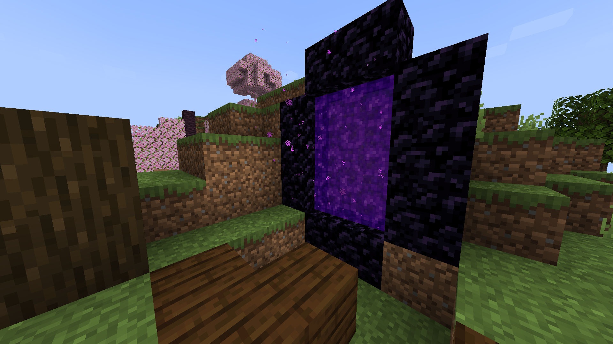
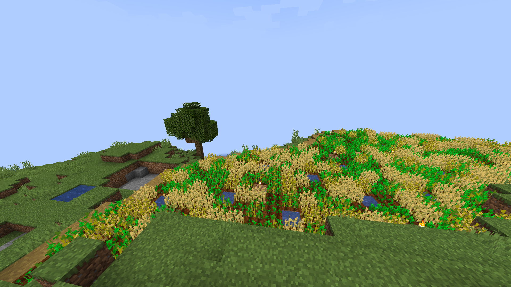
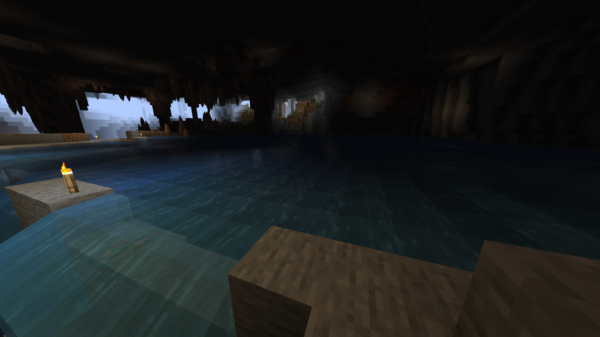
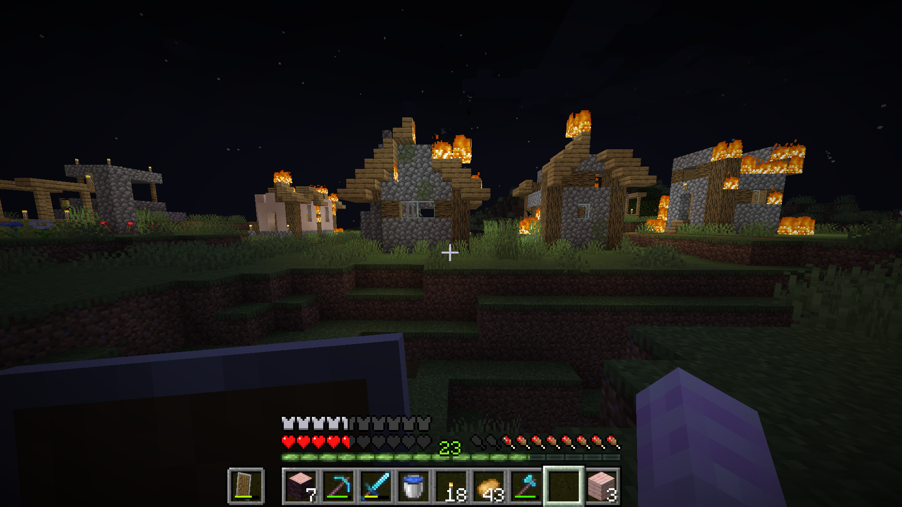
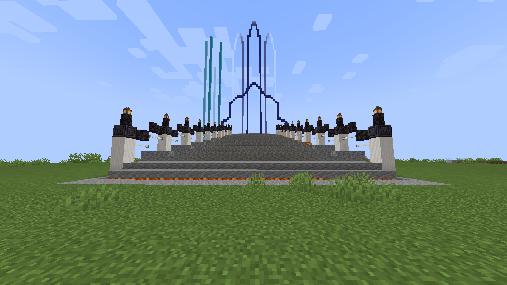

The Nether & Ancient Debris
I want to get full netherite, so I guess I try to find ancient debris. No luck though, only 3 and I have wasted most of my tnt :/
Conspiracy Theory
Why is Muna placing pressure plates all around? Very golden, very clicky. But I dug down to find a bunch of TNT. Free TNT, I thought. Shared with someone else, obtained 2 stacks.
Cativille Platform
For easy access and further expansion, a railway was created over the river. I think it can be used someday, as there will be a railway created.
Farming
To fulfill the very much need of wheat in Munareich (they use that as currency apprently), Cativille now has a small farm.
Deep Dark
I have found a deep dark in the depths of the snowy mountain across, connected through a wooden bridge by some unkown person. It was right beside an outpost, and I think someone had already been there. I then spawned a warden, escaped and found a few diamonds.
Cave Exploration
With the goal to make the cave safe for tourist miners, I set off to place torches in the caves. With some help from Muna, I have explored most of the major cave systems. Though I cannot find the deep dark as listed on Chunkbase.
Burn
Just a normal day, someone had set the village on fire. It was bad. The fire had destroyed most of the village, leaving only the not burnable parts.
Iron Farm
Soon, common need for iron became a problem. Hence, an iron farm was built in the woods of Munareich, near the main base. With the help of TCK10, the iron farm now provides iron for all in the server.
Land Claiming
As the game progressed, it triggered war, to find who was the best nation. Hence, war, and lots of new nations with different orgins started to arise. Munareich was one of the biggest of all, by the great supreme leader, Muna. Candy stood up to claim the land of the Cherry Grove. A parliment was also being built acroos the river to Cativille.
Game Start
Once upon a time, there was a land, unbeknownst to anyone. Through chunkbase, many then started discovering the land of the Cherry Blossoms, slowly being explored by people.